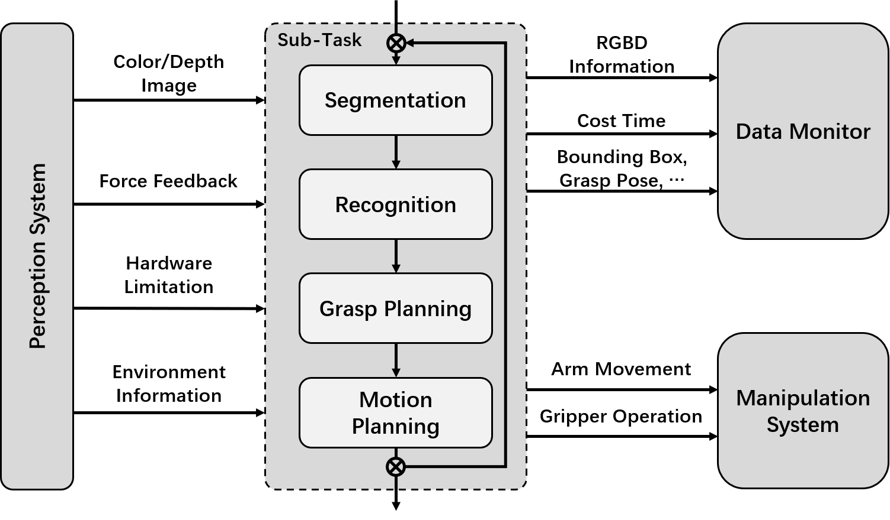

Standardized Process in DeepClaw
In DeepClaw, a sub-task is defined by a pipeline of modules, including segmentation, recognition, grasp planning, and motion planning, as shown in above figure. The pipeline takes color/depth images, force feedback, hardware limitation, and environment information as input and gives actions to the manipulation system and pushes data and results to data monitor.
Segmentation
Segmentation and recognition involve analyzing information gained from the perception system. Segmentation is the process that robot cell collecting environment information and representing spatial information of the target objects by using perception algorithms. The output of the segmentation module can be pixel-wise masks or bounding boxes. DeepClaw includes basic segmentation based on contour and edge detection in OpenCV [28].
Recognition
Recognition is the process of extracting features of the target object beyond location information. In this step, the robot cell infers the category of the target object by applying specific methods, such as support vector machine(SVM) and convolutional neural network [29]. Some of the end-to-end neural networks infer the location and category of the target object at the same time.
Grasping Planning
Grasping planning aims to find the optimal pose for the robot arm and end-effect to approach the target objects, which is highly dependent on both the end-effector and the objects. Recent years, research interests have shifted from analytic method [32, [33] to data-driven method [2], [12], [34]. DeepClaw has implemented an end-to-end grasp planning model based on fully convolutional AlexNet, which was trained on 5000 random grasps with labels.
Motion Planning
Motion planning utilizes information above, such as grasping pose, force sensor data, constrain of the robot system, and limitation of working space, to obtain collision-free trajectories. Currently, waypoint-based motion planning is used through our tasks. For UR5 and UR10e, we utilize the movej command implemented in UR’s controller to plan and execute a path between waypoints. For Franka, we utilize a fourthorder motion generator in the joint space provided by the libfranka software.